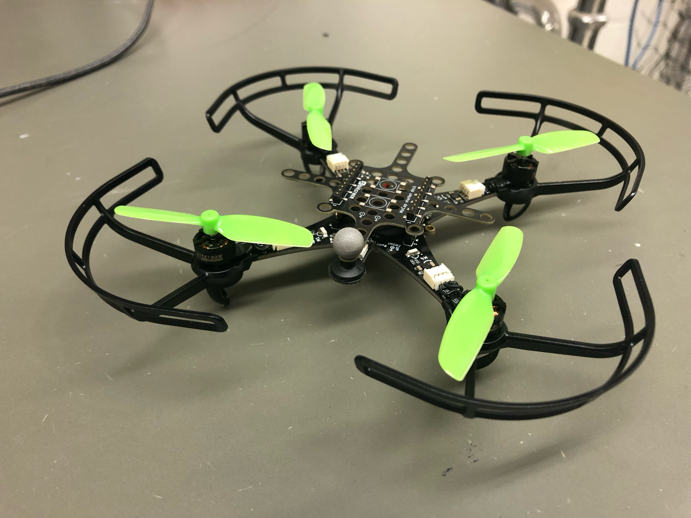

Drone Path Planning
and Control
In Progress
Work at NAPPLab on the difficult business of turning elegant flight ideas into reliable behavior in the real world.

Project Overview
This project focuses on building a reliable workflow for planning, tracking, and flying Crazyflie drones in a motion-capture environment. My work has centered on connecting the stack end to end: simulation, ROS integration, motion-capture data, trajectory execution, and the practical constraints that determine whether a system is genuinely usable rather than merely promising on paper.
The central difficulty has not been a single elegant algorithmic question, but the messier problem of integration. That has meant debugging OptiTrack and NatNet connectivity, resolving network-interface issues, validating motion-capture topics in ROS, testing Crazyradio and motor bring-up, and closing the gap between simulation and real flight. The goal is repeatable autonomous behavior, not a one-time demo that only works under perfect conditions.
Current Focus
- Stabilizing motion-capture-based flight with Crazyflie in the arena.
- Designing and testing hand-built trajectories such as a figure eight.
- Checking arena bounds, camera coverage, and initialization assumptions that affect tracking quality.
- Improving battery handling, documentation, and lab workflow for repeatable testing.
Recent Progress
Recent work includes setting up the simulation environment, testing flatness-based trajectory generation, and connecting planner outputs to the flight stack. I also worked through compatibility problems around ROS, Python environments, and supporting tools, while cleaning up repository structure and documenting the setup needed to get the system running consistently.
On the flight side, I brought up Crazyradio communication, tested motor activation, and pushed motion capture further toward real use by getting ROS topics to report usable position data. A major part of the work has been identifying why tracking quality degrades in practice, including issues tied to network configuration, initial pose assumptions, and orientation estimation when using limited marker information.
What Comes Next
The near-term goal is stable, repeatable trajectory tracking inside the flight space. That means mapping the arena bounds, adapting trajectories to the available volume, and validating initialization so the drone starts with the correct pose estimate. From there, the next layer of work is analyzing tracking error more carefully, comparing different hardware and tracking configurations, and improving the reliability of the overall autonomy pipeline.
Focus Areas
- Trajectory generation with safety and feasibility constraints.
- Robust control loops that maintain stability in real-world conditions.
- Integration with motion capture feedback for precise state estimation.